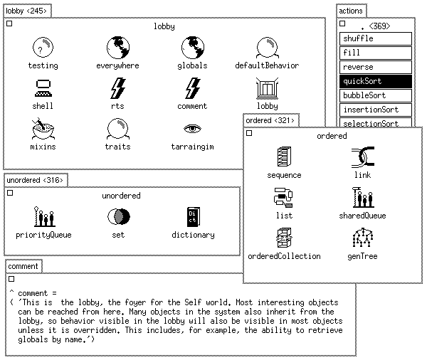
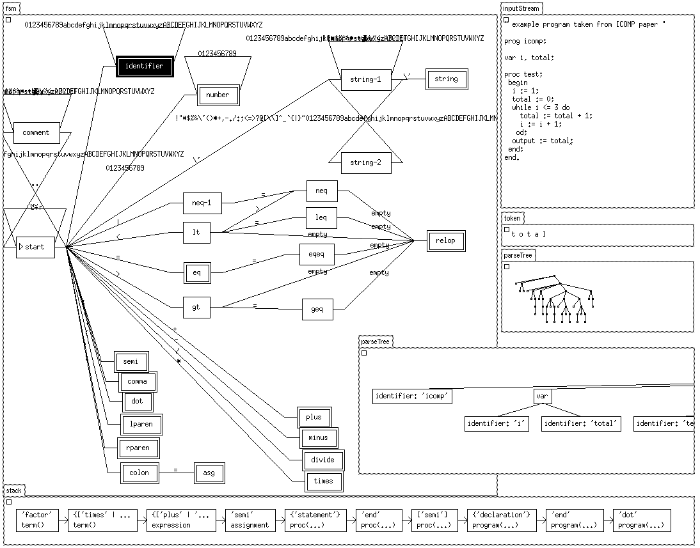

Předchozí díly se věnovaly především jazyku a prostředí jako takovému. V tom dnešním se podíváme na komunitu kolem Selfu, jeho historii, budoucí rozvoj a možné důsledky, které Self přinesl.
Komunita kolem Selfu je poněkud netradiční. Do velké míry je tvořená akademiky a lidmi sledujícími Self už desítky let. Ti si rádi počtou akademickou práci o něm, či na něm založenou, avšak moc aktivně nepřispívají ani do jazyka, ani do diskuze.
Self byl stvořen primárně Davidem Ungarem a Randallem Smithem. Oba dva se stále čas od času zapojují do diskuzí.
Primárními tahounem je však nyní Russel Allen, jenž hostuje GIT repozitář ve svém účtu, vytváří webové stránky, vede blog, začleňuje merge requesty a moderuje diskuze.
Dalšími silně se zapojujícím členem je Chris Double, jenž často komentuje na githubu, ale i v mail-listu. Také je ho možné potkat na IRC kanálu jako doublec.
Většina komunikace probíhá přes Yahoo groups mail list. Pokud se vám nechce logovat do yahoo účtu, tak :
Post Message: self-interest[a]yahoogroups.com
Subscribe: self-interest-subscribe[a]yahoogroups.com
Unsubscribe: self-interest-unsubscribe[a]yahoogroups.com
List Owner: self-interest-owner[a]yahoogroups.com
Pokud máte zájem odebírat výše uvedený mail-list jako usenet skupinu, vysoce doporučuji nastavit si odebírání přes NNTP, místo emailu. K tomu je možné použít například Gmane, kde skupinu najdete jako gmane.comp.lang.self. Pro odebírání je možné použít například thunderbird. Gmane web momentálně po crashi moc nefunguje, ale NNTP rozhraní je v pořádku.
news://news.gmane.org:119/gmane.comp.lang.self
Metodou pokus a omyl jsem zjistil, že mail list není moc vhodný pro jakoukoliv diskuzi, která se neváže přímo k Selfu a lidem aktivně vadí, že tam diskutujete, protože jim najednou chodí emaily ze skupiny, ze které přišlo za posledních 10 let dvacet emailů.
Osobně doporučuji veškeré technické diskuze přenést na GitHub issues:
https://github.com/russellallen/self/issues
Těch se většinou účastní lidé, kteří mají o téma zájem a nebudou vás hejtovat, když nahlas přemýšlíte o kódu a možných řešeních.
Dále také existuje polomrtvý IRC kanál, kam občas někdo přijde a způsobí diskuzi:
irc://#self-lang@irc.freenode.org
Osobně tam idlím už něco přes rok a musím říct, že diskuze na všechna možná témata jsou vítány, jen většina lidí ten kanál moc aktivně nesleduje. Proto může trvat klidně dny, než začnou reagovat. Určitě se tím nenechte otrávit a nechte klienta puštěného na pozadí (irssi na serveru) delší dobu, jestliže fakt chcete, aby někdo odpovědel.
Existuje subreddit /r/selflanguage, kam jsou většinou zasílány upozornění na novinky. Většina z nich je poté přeposlána na hackernews, /r/programming a na lobstery.
Také existuje blog, ale vypadá s šířkou textu 460 pixelů fakt špatně. Také nemáte svobodu psát si tam co chcete, a pokud se to majiteli nebude líbit, tak vám prostě část smaže (otestováno). Není to tedy obecné blogovací prostředí, kterým je třeba abclinuxu, nebo další blogovací služby.
Osobně mi na něm nejvíc vadí, že se svým formátem naprosto nehodí pro psaní technických textů, což myslím jednak na úrovni editace ve wordpressu, ale hlavně zobrazení v příšerné nudli, která přináší to nejhorší z mobilů na obrazovky vašich počítačů.
Pokud máte zájem tam psát, napište na email Russelovi Allenovi a on vám během pár dní zřídí účet. Obecně bych ale asi víc doporučil něco vlastního.
Blog je možné taky odebírat přes NNTP:
news://news.gmane.org:119/gwene.org.selflanguage.blog
a RSS:
První verze jazyka byla navržena v roce 1986 Davidem Ungarem a Randallem B. Smithem v Xeroxu PARC, odkud vzešel mimo jiné i Smalltalk, Ethernet, Laserové tiskárny a také velká část dnešního konceptu grafického uživatelského rozhraní.
Vývoj poté pokračoval od roku 1987 na Standfordské univerzitě v teamu Craig Chambers, Urs Hölzle, Ole Agesen, Elgin Lee, Bay-Wei Chang, a David Ungar. V té době byly vytvořeny první verze kompilátoru a také grafického rozhraní postaveného na frameworku Morphic.
V roce 1991 byl vývoj přenesen pod Sun microsystems, kde bylo vydáno několik verzí až po prominentní verzi 4.0 v roce 1995. V té době probíhaly práce na jednom z prvních JIT (Just In Time) kompilátorů, díky kterým se povedlo Self optimalizovat do té míry, že dosahoval výkonu přibližně poloviny optimalizovaného C kódu. Také byl tenkrát v Selfu implementován interpreter Smalltalku běžící rychleji, než tehdejší nativní kompilované verze.
Poté se Sun rozhodl Self dále nepodporovat a místo toho se dál věnovat Javě. Jak nedávno napsal v threadu na hackernewsChuck McManis, tehdejší zaměstnanec společnosti Sun Microsystems:
Pro ty z vás, co to nevědí: kdysi probíhal v Sunu souboj mezi TCL, Javou a Selfem (všechno projekty financované Sunem), kde Bert Sutherland (tenkrát ředitel Sun Labs a bratr Ivana Sutherlanda, známého průkopníka) požadoval, aby byly zastaveny změny v jazycích a aby jsme se podívali na každý z nich a rozhodli, který bude dál pokračovat. Když svět tak trochu vybuchl na WWW konferenci, která pobíhala v roce 1995 v Darmstadtu v Neměcku, Java oficiálně „vyhrála“ a jak Self, tak TCL byly zrušeny. (nikoliv úplně ukončeny, jen už nedostaly žádné další finance)
Na otázku, proč vyhrála zrovna Java odpovídá:
V té době to byla schopnost vytvářet spustitelný obsah uvnitř webových stránek. V dnešní době je na tomhle poli dominantní Javascript, ale až do WWWC 2 byli více méně všichni odkázáni na primitiva rozložení stránky. Java nám ukázala cestu k dnešnímu stavu (dynamických stránek), takže všichni chtěli, aby to jejich prohlížeč podporoval a když to nepodporoval, tak spustili (prohlížeč) HotJava a měli to. Jinak řečeno, Java poskytla odpověď na problém, který měla spousta lidí, a slíbila ten problém vyřešit cestou ‘open source’. Tvrdá a hořká pravda programovacích jazyků je, že historicky, elegance nehraje roli, zatímco použitelnost na aktuální problémy je to jediné, co se počítá.
To byl pro Self na dlouhá léta konec. Ne že by úplně umřel, ale v kombinaci s tím, že kvůli hardcoded optimalizacím běžel pouze pod SPARC procesory se o něj většina lidí přestala zajímat.
V roce 1997 koupil Sun firmu Animorphic technologies tvořenou lidmi, jenž stáli za vývojem JIT optimizací v Selfu. Ti na základě poznatků z vývoje vyrobili technologii Hotspot pro akceleraci do té doby velmi pomalé a nevýkonné Javy. Tím nejen že Self přišel o několik důležitých lidí, ale zmizela i jedna z velkých nevýhod Javy - její pomalost.
V roce 1999 vznikly první pokusy o běh Selfu nad Linuxem, což bylo dlouhou dobu velmi nepohodlné. V té době ale začalo být možné díky portu Davida Ungara provozovat Self pod Apple hardwarem, který používal PowerPC procesory. Macbooky byly podstatně levnější a dostupnější, než Sparc workstation od Sunu, takže Self nyní mohli poprvé používat i „běžní smrtelníci“.
V roce 2009 dostal David Ungar za Self Dahl-Nygaardovu cenu.
O rok později, v roce 2010, vydal Russel Allen verzi 4.0. Ta byla první, která oficiálně nativně běžela na Linuxu. Nutno dodat, že už od roku 2001 bylo možné Self provozovat v rámci projektu Self4Linux, nejednalo se však o oficiální verzi. Ještě předtím tu byl port Gordona Cichona z roku 1999.
Od doby vydání 4.0 probíhá vývoj vedený stále pouze pár lidmi. Poslední verze je v době psaní tohoto článku 2017.1 vydaná v květnu roku 2017.
Na Selfu momentálně probíhají pomalé a sporadické práce. Týkají se především všemožných oprav a úprav. Sám jsem se pustil do přidávání podpory Unicode do grafického rozhraní, ale přestože jsem dosáhl částečného pokroku, tak mě životní situace donutila prioritizovat projekty a tenhle jsem si prostě časově nemohl dál dovolit.
Zcela určitě je potřeba zapracovat na grafickém rozhraní. To je sice funkční, ale na dnešní dobu uživatelsky nepřívětivé a hlavně nemilosrdné co do tolerance chyb. Mnohokrát jsem shodil celý systém jen prostým zkoušením různých příkladů. Není k tomu zapotřebí nic extra, stačí se trochu upsat a systém přinejlepším zatuhne.
V konferenci se několikrát řešilo, že by chtělo zavést cosi jako mechanismus známý z některých Smalltalkovsků, jenž by umožnil obnovu z protokolu do bodu před pádem, nebo rovnou automatické ukládání nějakých bodů obnovy. Samozřejmě by také bylo fajn, kdyby systém nebylo možné takhle jednoduše shodit, nebo zaseknout.
Všechny textové editory potřebují vylepšit, neboť mnohokrát nedosahují ani funkcionality notepadu z windows. Práce s kopírovacím bufferem chce updatovat, protože v současnosti s ním Self pracuje v nějakém divném režimu, kdy musíte mít na pozadí puštěný autocutsel, aby to vůbec nějak fungovalo.
Osobně si myslím, že velký prostor pro posun prostředí a jazyka je v internetovém repozitáři projektů, ze kterého by bylo možno instalovat skrz definici závislostí. Jinak řečeno; dneska je v Selfu poměrně obtížné distribuovat váš software. Package manager by tomu výrazně pomohl.
Kdysi existoval projekt dávající si za cíl bootstraping Selfu; jeho vytvoření v sobě samém.
Pozůstatky z něj se dají najít na githubu:
Pokud by chtěl někdo pokračovat ve vývoji Selfu, tak tohle by byl asi dobrý začátek, kde se odpíchnout.
Zajímavé na něm bylo, že šel debugovat a propojit s běžící instancí Selfu.
Korz je velmi zajímavá myšlenka; Davida Ungara napadlo, jak by vypadal a fungoval Self, kdyby k němu přidal další dimenzi.
Jazyky podporující pouze funkce, jako třeba C, nebo Pascal mají pouze jednu dimenzi. Funkce přijímá nějaká data.
Objektově orientované jazyky propojily funkce se strukturou, čímž přidaly celou další dimenzi. Funkce nyní přijímá nějaká data a může být v různých objektech s různými významy.
Korz přidává další dimenzi v podobě celých světů. V nich jsou uloženy objekty. Na rozdíl od Selfu se nespecifikuje jen jméno objektu a zpráva, ale i svět do kterého se to má poslat. Světy můžou být různé, v některých například úplně chybí mirrory a funkce pro práci se systémem a diskem, takže fungují jako sandbox. Můžou dynamicky vznikat a zanikat, objekty můžou být jen v jednom světu, nebo ve vícero najednou.
To vše by se sice dalo simulovat použitím objektů ve kterých jsou objekty, bylo by však třeba dělat spoustu věcí manuálně. Korz tohle nabízí zabudované a podporované přímo na úrovni virtuálního stroje.
Hezky je to shrnuto v paperech:
Pokud nevíte jak papery získat použijte scihub (google poradí).
Bohužel, to je tak nějak všechno, co se dá o Korzu říct. Pokud vím, tak není opensource a autor o něm nikde moc nemluvil a na dotazy v konferenci nereaguje:
„Metafyzického“ je možná přehnaný termín, šlo mi ale o to nějak vystihnout možný potenciál, kontext a vizi Selfu, která se dá zachytit z historických materiálů, ale kterou jsem si zároveň částečně vysnil.
Před pár lety jsem při pročítání kompletních archivů Self konference narazil na něco, co stále podněcuje mojí fantazii. Jedná se o proof of concept systému pro práci s informacemi a vizualizaci programů nazvaný Tarraingím, zkráceně Tgim. Ten vytvořil James "kjx" Noble jako svojí akademickou práci.
Systém umožňoval zobrazovat a procházet objekty tak, jako jsme zvyklí procházet například soubory, pomocí ikon a různých vizualizací.


Samozřejmě, že výše uvedené ukázky mají svoje omezení a původní záměr byl spíš směrem co se týče práce s programovacími jazyky, nemůžu ale přestat přemýšlet a představovat si, jak by se něco podobného dalo použít s libovolnými informacemi ve stylu osobní wiki.
Jak řekl Alan Kay:
Uhel pohledu stojí za 80 IQ bodů.
Tohle mi přijde jako docela zajímavý experiment na téma prostředí, které vám dodává mnoho předpřipravených uhlů pohledu.
Nedávno uplynulo padesát let od pravděpodobně nejvlivnější počítačové prezentace všech dob: takzvané matky všech dem od Douglase Engelbarta.
Podrobnosti například zde:
Pokud vám toto demo uniklo, rozhodně doporučuji:
Pro spoustu lidí je Engelbartovo demo vizionářskou záležitostí. Často ho oslavují jako prekurzor moderní počítačové techniky, kde byly předpovězeny moderní vymoženosti, jako grafické uživatelské rozhraní, internet, interaktivní videohovory a další moderní vymoženosti. Vždyť to bylo poprvé, co byla použita počítačová myš!
Na první pohled by mělo jít o fenomenální úspěch. Vždyť komu se podaří předpovědět a definovat budoucnost tak, jako právě Engelbartovi?
Pro samotného Engelbarta se však jednalo o do jisté míry zklamání. Zklamání, které může být dodnes cítit komunitou kolem lispu a Smalltalkovských projektů. Jmenovitě o tom mluví často například Alan Kay, nebo Bret Victor.
V češtině se tomu věnují například:
Ve zkratce jde o to, že došlo pouze k naplnění té méně podstatné části jeho vize. Ta spočívala v co největší akceleraci lidského pokroku snahou o zvýšení lidské inteligence.
Toho mělo být dosaženo využitím počítačů jako pomocníků, tak jak to definoval Vannevar Bush ve své stati As We May Think. K tomu chtěl použít strategii boostrapování; zlepšováním procesů pro zlepšování procesů. Konkrétní detaily jsou popsány v práci Augmenting Human Intellect: A Conceptual Framework.
Jeho cílem nikdy nebylo vytvořit uživatelské rozhraní pro masy, tak aby lidé byli schopni intuitivně používat počítače a nic o nich nevědět, jak to zpopularizoval například Apple. Naopak! Jeho celoživotní snahou bylo co nejtěsnější propojení člověka a počítače.
Pokud mi dovolíte kostrbatou analogii, tak to co zamýšlel je asi jako matematika a vzdělání v matematice. Systém, který vytvářel měl být tím, čím je matematika pro člověka snažícího se postavit třeba most. Jeho „konceptuální rámec“ měl dát lidem způsob uvažování a schopnosti, které by umožnily používat počítač jako rozšíření své mysli, nikoliv jen jako záznamové a vyhledávací médium, jak ho z velké části používáme dnes.
Jeho představou bylo, že člověk snažící se provádět duševní práci bude schopný počítač programovat a co nejefektivněji instruovat tak, že s ním vytvoří uzavřenou smyčku, kde přestane vnímat kde končí člověk a začíná stroj.
Co tím myslím je možné pochopit pokud jste někdy používali nějaký program natolik, že jste přestali vnímat jeho ovládání a měli pocit, jako když s počítačem pracujete jen svou myslí. Je to možné vidět například u programátorských editorů, které si spousta lidí upravuje až je dokonale přizpůsobí svým potřebám a jsou v nich brutálně efektivní. Nebo člověk co modeluje 3D objekt v grafickém programu a po čase nevnímá ovládání programu, jen samotné modelování. Také hráči často zapomínají, že mačkají klávesy wasd a místo toho mají pocit, jakoby byli ve hře.
Engelbartovi šlo o to vytvořit podobný systém pro práci s počítači a informacemi obecně. Proto stvořil svůj NLS (oN-Line System), a proto je dnes stále jeho demo tak úžasné. V tom také dnešní programy z větší části pokulhávají, neboť jsou omezené paradigmaty grafického rozhraní a snahou být co nejvíc intuitivní. Když už se to nějakému programu povede, tak se pak jedná o specializovanou záležitost. V CADu, kde navrhujete baráky nemůžete napsat dokument, nebo vytvořit osobní informační bázi.
Vůbec celkově práce s informacemi byla kromě jejich prezentace zredukována v podstatě na kancelářský balík a sféru psaní poznámek ve wiki.
Možná se ptáte, jak do tohoto vstupuje Self. Osobně doufám, že z již vyšlých dílů je jasně patrné, že Self považuji za to nejbližší Engelbartově myšlence ze všeho, co je mi známo.
Jen se nad tím zamyslete:
Samozřejmě, Self je ve značně dezolátním stavu, některé z myšlenek byly jen načrtnuty, jiné byly uvedeny do praxe někdy v roce 1992 a od té doby na ně nikdo nesáhl. Schválně se podívejte na tuto krátkou ukázku demo snapshotu:
Člověk se jen těžko ubrání srovnání s možnostmi Engelbartovo NLS.
Nechci tvrdit, že Self je tím, co si Engelbart představoval. Podle mého názoru však mnohé jeho myšlenky šly stejnou cestou*. Kdyby se to dotáhlo do konce, bylo by k dispozici nekonečně programovatelné prostředí, kde všechno je adresovatelný a volatelný objekt. Prostředí s grafickým rozhraním s paradigmem, které dovoluje každému vytvářet si své grafické aplikace. Systém, který lze s trochou snahy skutečně použít, jako rozšíření vlastní mysli.
To myslím stojí za zamyšlení.
Tohle je všechno co se dá o Selfu jednoduše říct. Malá část faset mnohostěnného krystalu, odlesky nápadů, slova o myšlenkovém modelu v pohybu.
I kdyby nezměnil můj pohled na svět programovacích jazyků, interaktivní prostředí a grafické programovatelné systémy, tak stejně kompletně změnil můj pohled na reflexi. A to je něco, co se promítá skrz všechno nad čím jsem poslední dobou přemýšlel a na čem jsem pracoval.
Věci vytvářené v počítači můžou mít libovolný tvar. A nějak jsme se jako lidstvo kolektivně rozhodli, nejspíš úplně nevědomě a zcela určitě nesprávně, že nebudou tak dynamické, jak by mohly. Self ukázal, že existuje možnost aby vše fungovalo jinak.
Jsem svědkem, že Self v sobě ukrývá ještě hodně magie, jenž skoro nikdo neviděl. Tajemství vizualizovatelná rozumem. Je na vás jít a podívat se na ně.